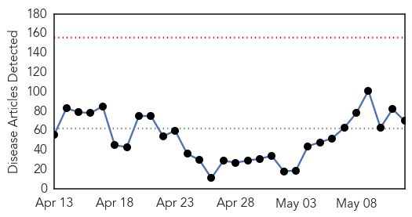
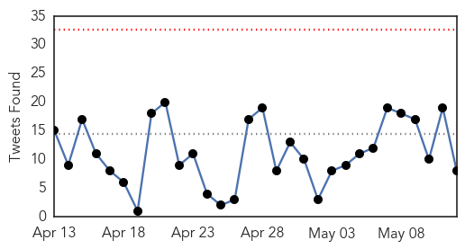
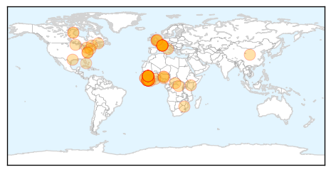

30 Day Trends
Web: 0 alerts, 0 warnings
Twitter: 0 alerts, 0 warnings
460 new deaths (11064 total)
1131 new cases (26722 total)
Top Articles:
- 1.000
- Liberia Declared Free of Ebola
- 1.000
- Ebola crisis: No useful data likely from vaccine trials as virus stamped out of West Africa, WHO says
- 1.000
- The Record: Ebola crisis fades
- 1.000
- Liberia Ebola-free, but 'can't relax yet,' WHO says
- 1.000
- WHO declares end of Ebola outbreak in Sierra Leone, but neighbor Guinea struggles to end virus
- 1.000
- Ebola crisis: No useful data likely from vaccine trials as virus stamped out of West Africa, WHO says
- 1.000
- Baptist leader celebrates Ebola-free Liberia
- 0.999
- Médecins Sans Frontières slams the World Health Organisation’s response to Ebola
- 0.999
- Liberia’s achievement against Ebola is monumental — WHO
- 0.999
- Ebola-free Liberians now eligible for visas
- 0.999
- Liberia holds party after 'beating' Ebola
- 0.998
- Kenya lifts travel suspension on Ebola-free Liberia -
- 0.998
- Liberia celebrates end of Ebola outbreak
- 0.998
- Liberia celebrates as WHO declares the nation clear
- 0.998
- President Officially Receives WHO Ebola-Free Declaration
- 0.998
- Nurse becomes Italy's second Ebola case
- 0.998
- Kenya lifts travel suspension of Ebola-free Liberia
- 0.998
- WHO criticised on Ebola
- 0.998
- Ebola-free Liberia pledges support to remaining 2 Ebola-hit countries - Xinhua
- 0.998
- Kenya lifts travel suspension on Ebola-free Liberia
- 0.998
- Ebola-free Liberia pledges support to remaining 2 Ebola-hit countries
- 0.997
- Delay post-Ebola drawdown
- 0.997
- LIBERIA HAS FINALLY BEEN DECLARED EBOLA FREE
- 0.996
- ‘Liberating Guinea, S/Leone, the Next Challenge’
- 0.995
- Liberia unshackled from the stranglehold of Ebola
- 0.995
- Liberians Celebrate After Ebola Free Declaration
- 0.994
- Liberia’s government holds celebration to mark Ebola’s end
- 0.994
- As Ebola disappears, no useful data seen from vaccine trials -WHO
- 0.994
- UVa Patient Tests Negative For Ebola
- 0.994
- Liberia celebrates end of Ebola epidemic
- 0.993
- Liberia Is Ebola Free. We Can Do More.
- 0.993
- Now Ebola-free, Liberia’s need to restore maternal health care takes centre stage - Liberia
- 0.992
- One Year Later, Ebola's Lessons for the Next Big Outbreak
- 0.992
- Doctor barred from St. Luke's clinic after return from Sierra Leone
- 0.991
- WHO works on plan to tackle disease outbreaks after Ebola fiasco.
- 0.990
- US Congratulates Liberia Gov’t
- 0.988
- Ebola: Expert panel urges 'unified entity' within WHO for emergency response
- 0.988
- UPDATE: UVA Medical Center Patient Tests Negative for Ebola
- 0.988
- Ebola declared dead in Liberia
- 0.985
- WHO works on plan to tackle disease outbreaks after Ebola
- 0.984
- WHO works on plan to tackle disease outbreaks after Ebola fiasco
- 0.980
- WHO works on plan to tackle disease outbreaks after Ebola fiasco
- 0.978
- Missionary, Ebola Survivor and Indiana University Alum Challenges Medical School Grads to Remain True to Their Purpose
- 0.978
- Expert panel identifies gaps in WHO's Ebola response 12/05/2015
- 0.978
- Missionary, Ebola survivor and IU alum challenges medical school grads to remain true to their purpose
- 0.976
- “Alive To Tell The Story”
- 0.975
- AfDB Rep Wants Resilient Health System In Liberia
- 0.973
- Liberians Hit the Streets for a Joyous "Goodbye Ebola" Party
- 0.972
- Remarks By World Bank Liberia Country Manager Inguna Dobraja at the Declaration of the End of the Ebola Outbreak in Liberia - May 11, 2015
- 0.970
- WHO Works on Plan to Tackle Disease Outbreaks After Ebola Fiasco
Showing top 50 articles...
Top Tweets:
- 0.853
- Nurse who worked in Sierra Leone tests positive for Ebola after arriving in ... - Minneapolis Star... http://t.co/HtiA1bGYkg ebola EVD
- 0.834
- As Ebola disappears no useful data seen from vaccine trials: WHO - Reuters http://t.co/ufRA4pqD2p ebola EVD
- 0.782
- As Ebola disappears no useful data seen from vaccine trials says WHO - Fox News http://t.co/3S74G78FMA ebola EVD
- 0.765
- WHO works on plan to tackle disease outbreaks after Ebola fiasco - Yahoo News http://t.co/VG2Ed3LzWQ ebola EVD
- 0.684
- Nurse becomes Italy's second Ebola case - Yahoo News http://t.co/bmnSt4mDTP ebola EVD
- 0.636
- WHO to Accelerate R&D for Ebola Other Diseases - Voice of America http://t.co/ke1v6rrXv5 ebola EVD
- 0.631
- WHO Issues Interim Advice on Sexual Transmission of Ebola - Medscape http://t.co/Vgqf2w65UN ebola EVD
- 0.585
- Bavarian Nordic gets 50 million euro EIB loan for Ebola vaccine - Reuters http://t.co/RGfl9izHe3 ebola EVD
Web/News Articles
Tweets
Human Impact
Article Locations
Article Confidences